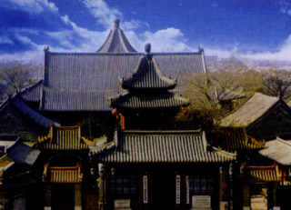

沧州市是河北省的一个地级市，地处河北省东南，东临渤海，北靠天津，与山东半岛及辽东半岛隔海相望，距北京200公里，距天津100公里，距石家庄和济南均为220公里。
沧州市是国务院确定的经济开放区、沿海开放城市之一，也是石油化工基地和北方重要陆海交通枢纽，是环渤海经济区和京津冀都市圈重要组成部分。
沧州已成为西煤东运新通道的出海口和冀中南、鲁西北等地区对外开放的桥头堡。
十大“沧州名片”分别是石油之城、管道之都、黄骅港、铁狮子、大运河（沧州段）、沧州武术、吴桥杂技、金丝小枣、诗经传承地、著名人物纪晓岚。
纪晓岚故里
清代《四库全书》总纂纪晓岚故里在沧县崔尔庄。纪昀，字晓岚，清乾隆皇帝称其“敏而好学可为文，授之以政无不达”，世称文达公。其墓地在崔尔庄镇北村枣林中，墓前石碑刻：“皇清太子少保协办大学士礼部尚书文达公神道碑”。

泊头清真寺
泊头清真寺为全国重点文物保护单位。清真寺始建于明永乐二年(1404年)，规模宏大的礼拜大殿顶部飞檐四出，角亭对立。全寺楼台殿阁，成垂一线，重重院落相套，横向配以门道、石桥，具独特的风格和建筑价值，是中华民族的宝贵遗产。
青县青云观
青县青云观是华北平原上历史悠久的道观。春秋战国时，老子——李耳弃周出行，云游四方至此地隐居，传经布道，民众相聚而居，形成村落。至元初，“觉道”大师来至此庄，营造起一座颇具影响的道观——青云观，成为道教圣地。
狮子头
狮子头就是丸子的一种。铁狮子头这道菜，其出处是因为神医喜来乐的家是河北沧州的，而沧州的的铁狮子是一景，所以就叫这丸子铁狮子头了。
火锅鸡
沧州火锅鸡是一道色香味俱全的传统名菜，属于冀菜系。此菜起源于河北省沧州市。以菜鸡，番茄，豆瓣酱，大蒜，大料，辣椒为料制作而成。火锅上的鸡为主要代表，味道麻辣鲜香，食用时配以陈醋蒜泥麻酱等辅料，味香浓郁，回味无比。
涮羊肉
涮羊肉又称“羊肉火锅”，旧都百话》云：“羊肉锅子，为岁寒时最普通之美味，须于羊肉馆食之。此等吃法，乃北方游牧遗风加以研究进化，而成为特别风味。”